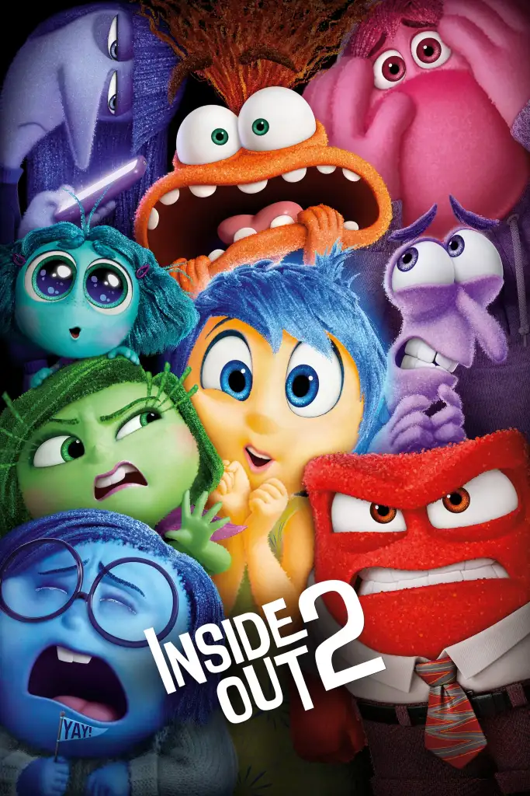
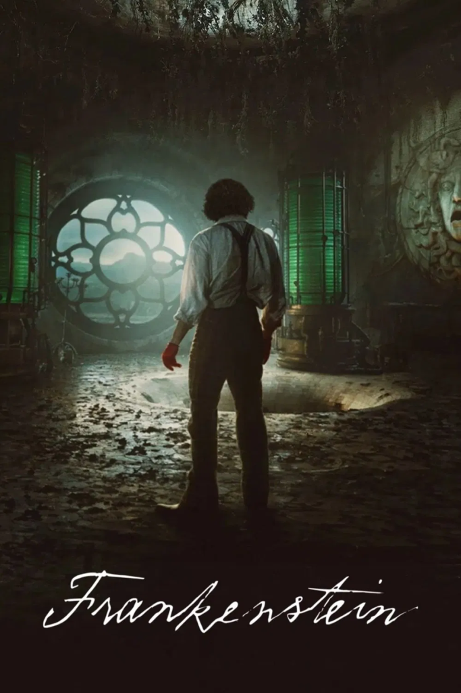

Concrete vocabulary, more visual context, and easier activities.
Your movie-night learning guide
Watch a movie. Build all four English skills.
Movie Your English turns one film into a guided learning journey before, during, and after you watch—without taking the fun out of movie night.


Start with the right lesson
Choose a level that feels challenging.
Every movie card shows the language complexity of the activities.

Familiar topics, accessible dialogue, and challenging tasks.
More natural dialogue, some expressions, and questions with greater detail.
Natural language, specialized vocabulary, and more abstract ideas.
Before pressing play
Open the lesson and start practicing.

Three things to know
- Find the movieClick on the poster to open the film.
- Move at your paceUse the arrows to continue or review a question.
- Check new wordsUse Cambridge Dictionary for meaning and pronunciation.
While you answer
The lesson keeps track with you.
- Wrong choices stay light red.
- Correct answers are confirmed instantly.
- Click, type, sort, or match to answer.
The complete learning path
One movie. Three moments to learn.

BeforeGet ready for the story
Trailer, plot & vocabulary
Watch the trailer, choose the correct plot, and build the vocabulary you will need. Complete the extra challenge to activate key words and ideas before the film begins.
- Explain why the incorrect plots do not fit.
- Use the comments after each question as conversation prompts.
- Look up unfamiliar words and listen to their pronunciation.
DuringWatch, focus, and enjoy
Guiding questions
Read the questions before starting the movie. Keep them in mind while you watch, but do not pause for every detail—the story and the experience still come first.
- Use English subtitles if they help you follow the dialogue.
- For an extra challenge, watch familiar scenes without subtitles.
- Try to predict answers before the movie and revisit them afterwards.
AfterCheck what you understood
Comprehension activities and debate
Return after the credits to answer the comprehension quiz. Some lessons also include a scene, interview, or listening activity for closer language practice.
- Discuss each question before selecting an answer.
- Use the follow-up comments to explain opinions and make connections.
- Move back through the questions whenever you want to review.
Wrap upExpress your opinion
Time to write or speak
Answer the final question in a text or record yourself speaking. This is where you connect the movie to your experience and use English in your own voice.
- Download or print your movie report as a PDF.
- Share your progress and response with your teacher.
- Create an Instagram Story to celebrate the completed lesson.
Using it in class
A movie lesson plan that leaves room for conversation.
Teachers can complete the activities with their students, ask them to justify their choices, pause to predict what comes next, and compare answers after the film.
Students working independently can follow the same order, use the prompts for speaking practice, and send the completed report to their teacher.
Ready for the opening scene?